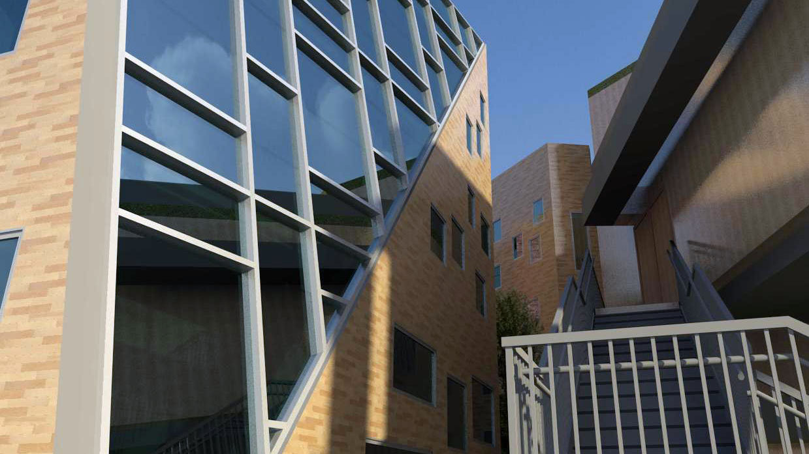
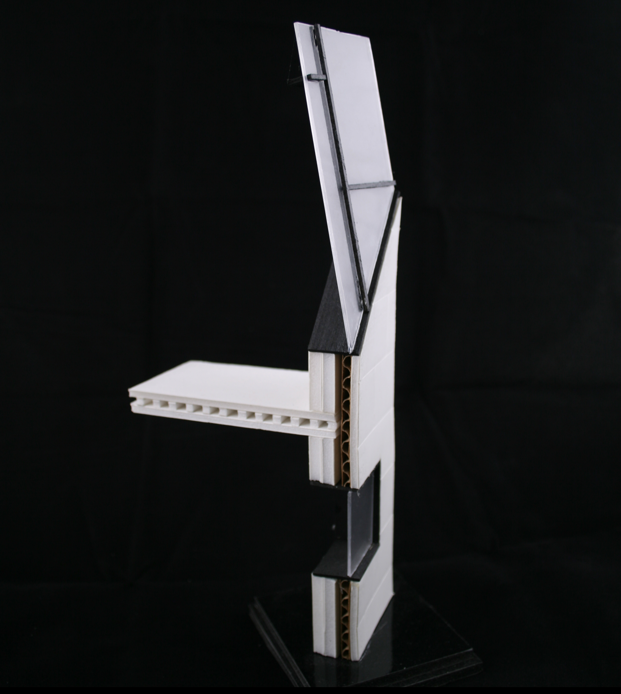

The Woodmaker
2nd Year Architecture Project

Mediums Used:
Revit Architecture, AutoCAD, Sketchup
The “Maker” project was a group project in which each student was given a maker to design for. Thinking about how a wood maker works I began to consider words used to describe the work. The final three I came down two were glue, sand and cut. I decided to construct and deconstruct my study models based on these methods. Using a rectangle extruded from the outline of the site I began to cut sections away.
As I programmed the space I crated two separate areas, to divide the working and living space. Placing the living space in the back of the lot allowed for privacy as well as access to a private garden.

